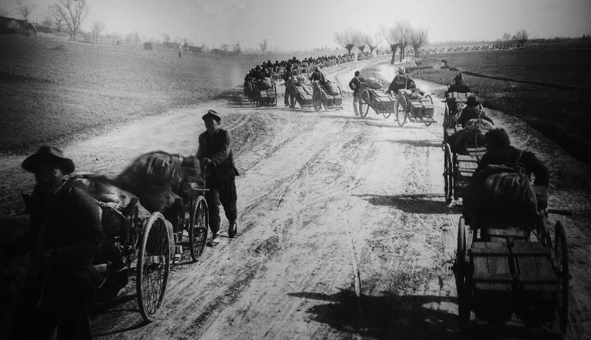
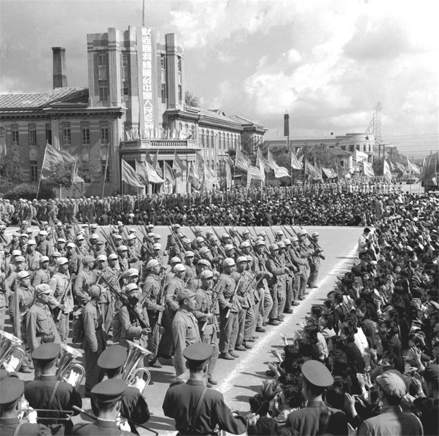

——毛泽东思想中「敢于斗争、善于斗争」的政策与策略智慧
第一章 第二节 · 毛泽东思想的主要内容和活的灵魂
汇报人：袁一凡
三个历史现场：纸老虎的诞生、完整表述、哲学论证
两个维度各管什么 · 真老虎与纸老虎的两重性
分类小测验 · 解放战争兵力对比动画 · 解放战争与抗美援朝
从战场到书桌：这个方针今天怎么用 · 总结与讨论
译员把「纸老虎」译成 scarecrow（稻草人），毛泽东坚持要译作 paper tiger——这个词从此进入英语政治词汇。
完整命题的正式表述，成为党处理对敌斗争问题的基本方针。
为这一方针补上哲学论证：对立统一规律、两重性分析。
这一方针属于毛泽东思想主要内容中的「政策和策略的思想」，并贯穿于革命军队建设和军事战略的理论之中。
「其中包括：弱小的革命力量在变化着的主客观条件下能够最终战胜强大的反动力量；战略上要藐视敌人，战术上要重视敌人；要掌握斗争的主要方向，不要四面出击；……」
毛泽东同时强调「政策和策略是党的生命」。
藐视与重视都建立在对敌我力量对比的科学分析上，不是口号式的乐观。
「真正强大的力量属于人民」——藐视敌人的底气来自人民。
把胜利建立在自己的力量上，不指望恩赐、不被恐吓左右。
全局 · 本质 · 长远
局部 · 现象 · 当下
对立统一规律：任何事物都有两面。帝国主义和一切反动派也有两重性——就本质与长远看是纸老虎，就现象与当下看是真老虎。只看一面，都会犯错误。
只见「纸老虎」→ 轻敌盲动（→ 瞎打莽撞）；只见「真老虎」→ 惧敌退缩（→ 不敢斗争）。两点论与重点论的统一，才是完整的辩证法。
对敌人：总体上「化」它，具体处「真」打它。战略藐视给方向，战术重视给路径。
判断下面每句话体现的是「战略上藐视」还是「战术上重视」，欢迎全场抢答
解放战争敌我总兵力对比（单位：万人，约数，据党史通行统计）。方向由战略藐视指引，进程靠战术重视一步步走出来。

三大战役（1948.9–1949.1）歼灭和改编国民党军 154 万余人——每一次「斤斤计较」的小胜，都在为纸老虎的倒掉添一块砝码。

定方向、给信心：它本质虚弱、必然灭亡，所以我们敢战，且相信最终必胜。
定方法、给路径：它当下凶恶、真会吃人，所以要会战，一口一口把它吃掉。
藐视与重视不是两种心情的切换，而是对同一个敌人两重性的科学分析——不悲观的根据在「本质」，不盲动的根据在「现象」。
把战略上的乐观，落实为战术上的勤奋。心态上轻视它，行动上死磕它。
战略上藐视敌人，战术上重视敌人——政策和策略是党的生命
反动派的两重性：既是真老虎，又是纸老虎（对立统一规律）
敢于斗争 × 善于斗争 = 以弱胜强，统一于实事求是
真正的强大，是看清对手之后的从容，和拆解对手时候的认真。
提示：一个在战略全局上判断本质与前途，一个在具体行动上掉以轻心。藐视，不减少任何一分具体准备。
试着用「战略藐视 + 战术重视」拆一件你眼下最想躲开的难事。
请老师和同学们批评指正
主要参考：2023年版《毛泽东思想和中国特色社会主义理论体系概论》第一章第二节
《毛泽东选集》第四卷 ·《关于帝国主义和一切反动派是不是真老虎的问题》（1958）